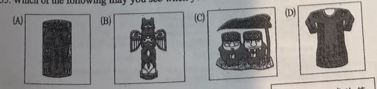
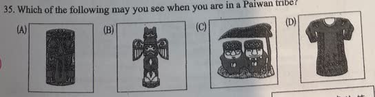

分享原卷｜第35題
完整原題
作答所需文章／材料
Hundred Step Snake pointed head mainly brown or gray, with light brown or gray triangles 91 cm to 121 cm ▶ Be careful! They are poisonous. ▶ They feed on small animals, like birds or frogs. ▶ Most of them are in the mountains in China and Taiwan. Hundred Step Snakes are important for Paiwan, Bunun, and Rukai, the indigenous tribes in Taiwan. Paiwan people believe they are from Hundred Step Snakes. We can see patterns of Hundred Step Snakes on many things in Paiwan tribes. A Story about Hundred Step Snakes 第一格文字：One day, when an old man was picking up a flower, a Hundred Step Snake appeared. 第二格文字：I want your daughter to be my wife. If not, you will die. 第三格文字：Don't be sad, Dad. I will get married to it. 第四格沒有台詞，畫面請見下方原卷圖。 【原卷字詞】triangle 三角形；poisonous 有毒的；indigenous tribe 原住民族、部落；pattern 圖騰。

Which of the following may you see when you are in a Paiwan tribe?
(A) 圖(A)（見原卷選項圖）
(B) 圖(B)（見原卷選項圖）
(C) 圖(C)（見原卷選項圖）
(D) 圖(D)（見原卷選項圖）
先想一想，再查看答案、解說與原圖
原卷作答：A（原卷紅筆訂正D）
正確答案：D。圖(D)衣物上的幾何蛇紋，與本文百步蛇圖案的線索最相合。
逐項解析
| 選項與原句 | 判讀 | 句意與判斷理由 |
|---|---|---|
| (A) 圖(A)（見原卷選項圖） | 不選 | 圖(A)未呈現本文用來判讀的百步蛇圖紋線索。 |
| (B) 圖(B)（見原卷選項圖） | 不選 | 不能只因是裝飾柱就當成本文所指的百步蛇圖紋物品。 |
| (C) 圖(C)（見原卷選項圖） | 不選 | 圖(C)人物造型與本文百步蛇斑紋的線索不同。 |
| (D) 圖(D)（見原卷選項圖） | 應選 | 圖(D)衣物上的幾何蛇紋，與本文百步蛇圖案的線索最相合。 |
詳細說明與解題步驟
【圖文完整中譯】
百步蛇：尖的頭部，主要為棕色或灰色，帶淺棕或灰色三角斑紋，長91到121公分。要小心，牠們有毒；以鳥、青蛙等小型動物為食；大多在中國與臺灣的山區。
百步蛇對臺灣的排灣、布農、魯凱等原住民族很重要。排灣族人相信自己源自百步蛇；在部落許多物品上能看到百步蛇圖紋。
下方另以A Story標示故事：老人摘花時遇蛇；蛇要老人把女兒嫁給牠，否則老人會死；女兒說爸爸別難過，願意嫁給牠；最後一格畫出蛇變成男子。最後一格是故事畫面，不是動物會實際變人的科學敘述。
feed on是以……為食，like在此是例如；they的指涉要看所在句子的主詞，不能把不同段落出現的they都當成同一對象。
【題意與讀圖】
問在排灣族部落可能看見哪項物品。先看百步蛇特徵圖及其反覆的三角形圖紋，再比對四幅選項；D衣物的幾何蛇紋最符合文章說部落物品可見百步蛇圖案的線索。
本題依文章及附圖選最貼切者，不表示每種三角紋必定屬某族，也不靠猜A、B、C的族群或材質排除。保留四個原圖選項，沒有用文字自造另一組圖案。
核對註記：已依原卷或完整文字核對並獨立解題；對應教材課次未確認，歸綜合。
原圖（僅本題）
